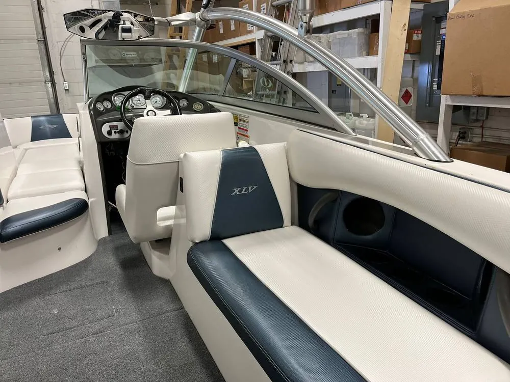
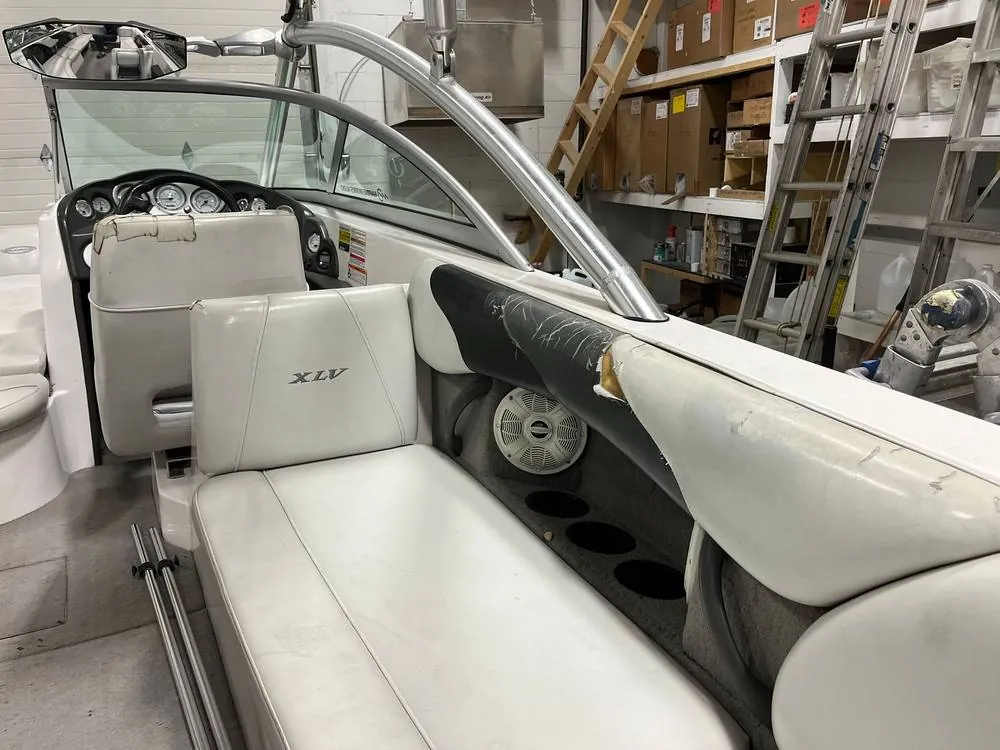
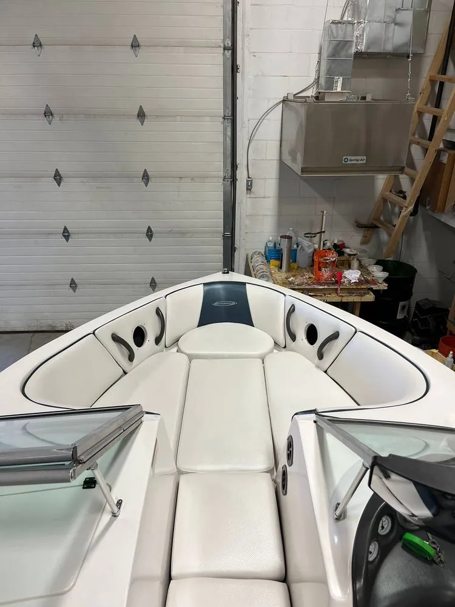
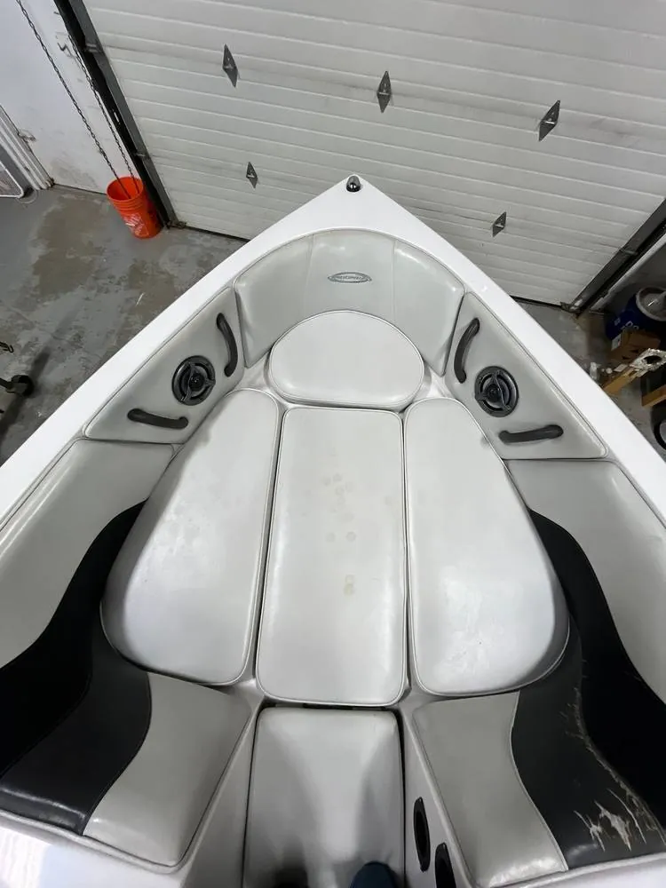

Trim-Pro / Boat upholstery & tops
Boat upholstery, tops & tarps in Calgary
From simple repairs to recovering what you have to complete custom marine upholstery. We patch your boat top or build a new one.
Marine services
Boat tops, boat seats and covers in Calgary
Seat upholstery
We can help with your marine upholstery, from simple repairs to recovering what you have to complete custom marine upholstery.
Boat tops
We will patch up what you have or make you an entire new top. We do snap and ratchet tops to suit your needs.
Boat tarps
Boat tarps and covers made to fit.
Trusted by local dealerships
We work closely with the major manufacturer dealerships in town.
Recent work
Before and after
Drag the handle to compare the old upholstery with the finished job.


BeforeAfter

BeforeAfterMarine
Trusted by local boat dealerships
We work closely with the major manufacturer dealerships in Calgary, so wake boats, ski boats and pontoons come back looking factory fresh.
Don't see your brand? Ask us. These are examples of what we work on.
Common questions
Questions we get asked
Do you make new boat tops?
Yes. We patch up the top you have or make an entirely new one, in snap or ratchet styles.
Which boat brands do you work on?
We work closely with the major manufacturer dealerships in Calgary and handle brands such as Mastercraft, Supra, Moomba, Malibu, Bennington and Tige.
Can you recover my boat seats?
Yes. Marine upholstery work ranges from simple repairs to recovering what you have to complete custom upholstery.
More from Trim-Pro
Calgary, ABGet directions